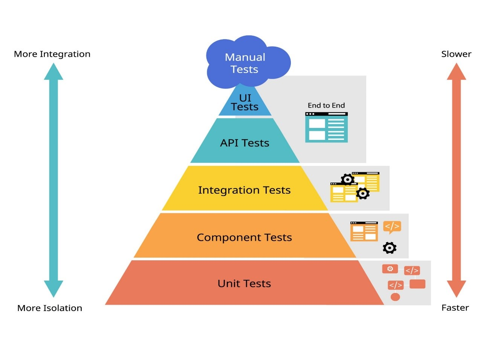

O propósito dos testes
Ao escrever um software, você pode confirmar se ele funciona corretamente por meio de testes. Teste pode ser amplamente definido como o processo de execução de software em ambientes para garantir que ele se comporte conforme o esperado.
Testes bem-sucedidos podem dar a você a confiança de que, à medida que adicionar novos códigos, recursos ou e até mesmo atualizar suas dependências, o software que você já escreveu continuem a funcionar da maneira que você espera. Os testes também ajudam a proteger de software contra cenários improváveis ou entradas inesperadas.
Testes Manuais vs. Automatizados
Os testes manuais têm seu lugar, geralmente como um precursor da programação, mas também quando os testes automatizados se tornam muito não confiáveis, têm um escopo amplo, ou difícil de escrever.
Testes automatizados são qualquer processo que permita a codificação e execução dos testes repetidamente por um computador para confirmar o comportamento pretendido do software sem pedir para que uma pessoa realize as etapas repetidas, como configurar ou verificar os resultados. É importante ressaltar que, depois que o teste automatizado é configurado, ele pode ser executado com frequência. Essa ainda é uma definição muito ampla, e é importante notar que os testes assumem todos os tipos de formas.
A Pirâmide de Testes
Para entender bem esse universo, é fundamental conhecer a Pirâmide de Testes, que divide os testes em Unitários (base), Integração (meio) e Ponta-a-Ponta/E2E (topo).

Base: Testes Unitários e de Componentes
- Unitário: Os testes de unidade têm o menor escopo. Elas tendem a ser usadas para testar pequenas partes de código, ou códigos puramente sem estado, quase de maneira matemática: se eu fornecer seu código com as entradas X, Y e Z, a saída dele será A, B e C. O código com testes de unidade normalmente não tem dependências externas, como a busca em uma rede ou o uso implícito de outras funções ou bibliotecas. É um nó de árvore do código que você pode "recortar" e testar por conta própria.
- Componentes: Como as práticas modernas de desenvolvimento da Web são baseadas no conceito de componente, os testes de componentes são uma maneira prática de analisar testes: por exemplo, você pode decidir que cada componente precisa de um teste. Os testes de componentes também são simples de acompanhar em contextos em que um único desenvolvedor ou pequena equipe reivindica claramente a propriedade de um componente. No entanto, pode ser difícil simular dependências complexas.
Meio: Testes de Integração e Smoke test
- Integração: Eles tendem a testar um pequeno grupo de componentes, módulos, subsistemas ou outras partes significativas do código em conjunto para garantir que eles funcionem corretamente. Essa é uma definição muito vaga. Para desenvolvedores da Web, imagine que o código que você está testando não é o build real de produção do seu site (ou até mesmo algo próximo), mas ainda conecta vários componentes relacionados do seu sistema.
- Smoke Test: Esses são testes que precisam ser concluídos muito rapidamente e determinam se a base do código está em um estado adequado. Na prática, isso significa realizar testes simples no código que tem efeitos abrangentes na sua experiência.
Topo: Testes de ponta a ponta (E2E) e de APIs
- E2E: Os testes de ponta a ponta geralmente ficam no topo da pirâmide de teste. Elas descrevem uma interação de experiência inteira com seu app da Web ou site, talvez centrada em um recurso específico e geralmente são executadas em um navegador controlado por um agente. Algumas táticas para simplificá-los podem incluir a redução do escopo ou a simulação de componentes específicos, quando relevante.
- API: Os testes de API podem incluir a confirmação do comportamento das APIs fornecidas pelo software ou o acesso a APIs reais (possivelmente ativas) para confirmar o comportamento delas. De qualquer maneira, isso tende a testar as abstrações entre sistemas, ou seja, como eles se comunicarão entre si, sem realmente integrá-los como em um teste de integração. Esses testes podem fornecer um precursor básico do teste de integração sem a sobrecarga de execução dos sistemas entre os quais você está testando as conexões.
Referências
- Tipos de testes automatizados | web.dev . Disponível em: <https://web.dev/learn/testing/get-started/test-types?hl=pt-br>. Acesso em: 23 fev. 2026.
- The Kent C. Dodds Blog . Disponível em: <https://kentcdodds.com/blog>. Acesso em: 23 fev. 2026.
- SILVA. Tipos de testes: quais os principais e por que utilizá-los? Disponível em: <https://www.alura.com.br/artigos/tipos-de-testes-principais-por-que-utiliza-los?srsltid=AfmBOoo084kImy6t-lL2GOHj-5hejOChpFVXd5SuG-zag0L52GsOEIev>. Acesso em: 23 fev. 2026.